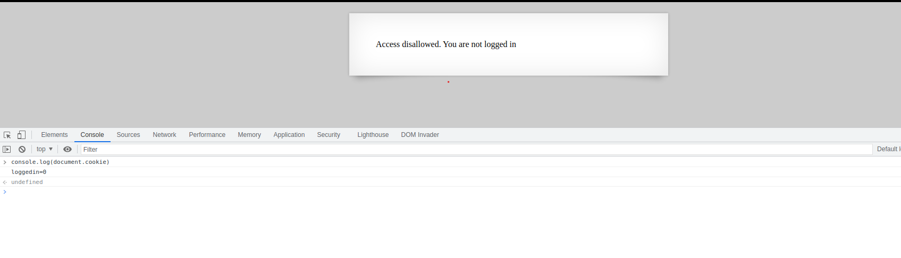
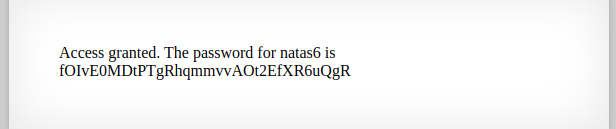

In this lvl, the website showed me, that I 'm not logged in. I did not see any other buttons or options so I decided to take a look into my cookies
That was verry Easy. I just needed to change the 0 to a 1. I did this with the follown command.
document.cookie = 'loggedin=1'
After I did that I just needed to reload the page and Bam
Here we go!!
Back to the Menu Natas6